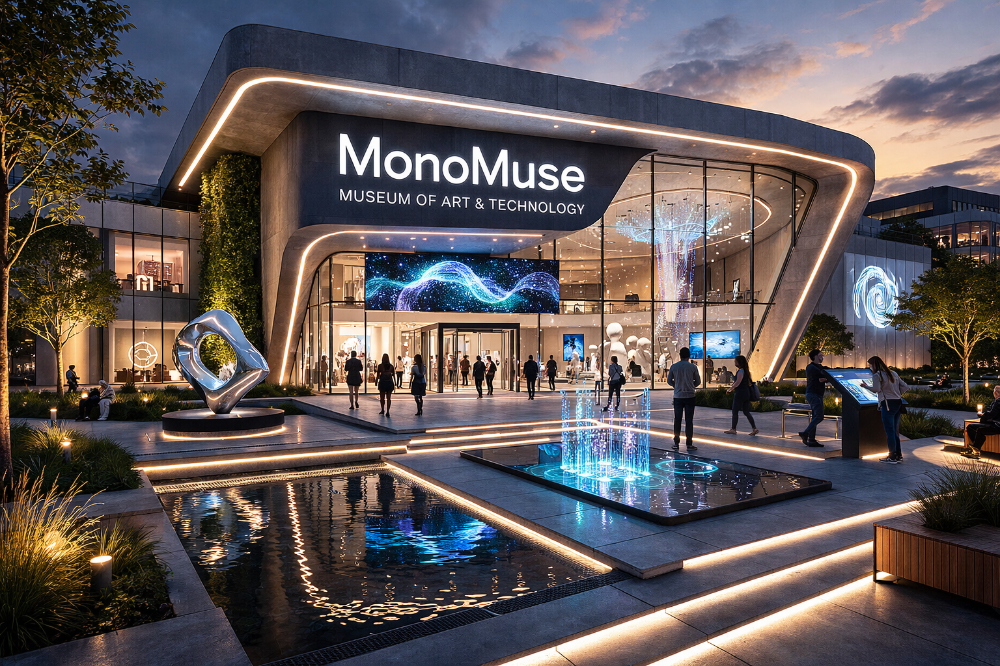

Mission Statement
MonoMuse welcomes everyone, from curious first-time visitors and school groups of artists, technologists, and learners.
Our exhibitions are designed to be accessible and engaging for all ages and backgrounds.
Founded in 2018, MonoMuse began as a small gallery space with a bold vision: to bridge the gap between art
and technology. Over the past two decades, we have grown into a world-class contemporary museum. Our mission
is to make the intersection of art and technology accessible to all, fostering a community where creativity and
innovation thrive together.

Milestones
- 2018: MonoMuse founded with our first exhibition "Digital Horizons"
- 2019: Opened our permanent interactive installations wing
- 2021: Reached 1 million visitors
- 2022: Launched our annual Technology & Art Festival
- 2024: Expanded to a new 50,000 sq ft building